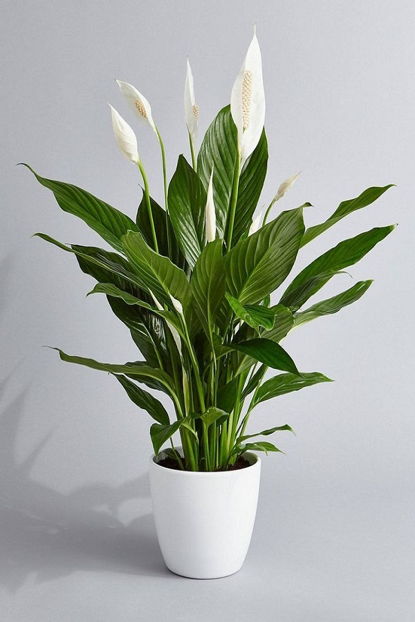

Peace Lily
It got the recognition it deserves, from the general public after NASA put it on list of “Top Ten Household Air Cleaning Plants.” This tropical shade-loving plant helps cleanse the air we breathe. While we all appreciate cleaner, oxygenated air, it’s also the easy care and resiliency that makes them such popular houseplants.
Botanical name: Spathiphyllum wallisii
Benefits: filters benzene, formaldehyde, trichloroethylene, xylene, toluene and ammonia.